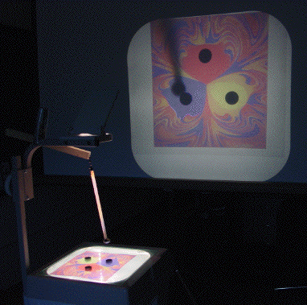

| Mark the transparency near each magnet with a color, one color for each magnet. |
| Now place a pencil on the transparency under a starting position of the pendulum. |
| After the pendulum comes to rest, mark the starting point with the color of the magnet over which it comes to rest. |
| Find a nearby starting point from which the pendulum comes to rest over a different magnet. |
| Now investigate starting points on the line connecting these two points. Can you illustrate the Wada property? |
|  |
| Basin boundaries, after a lot of coloring |
| Starting the pendulum directly over one of the stationary magnets results in the pendulum staying over that stationary magnet. That is, the stationary magnets are fixed points. |
| Moreover, from all nearby starting points the pendulum returns to the same stationary magnet, so these are stable fixed points. |
| The starting point exactly equidistant from the three stationary magnets also is a fixed point, but it is unstable because from nearby starting points the pendulum goes to one of the stationary magnets. Can you get the pendulum to stay at the unstable fixed point? |
Variation Add another pair of stationary magnets. How does the positioning of the stationary magnets change the geometry of the basins? What if one of the stationary magnet pairs is reversed, to repel the pendulum?
Return to Pendulum Fractal Basin Boundary